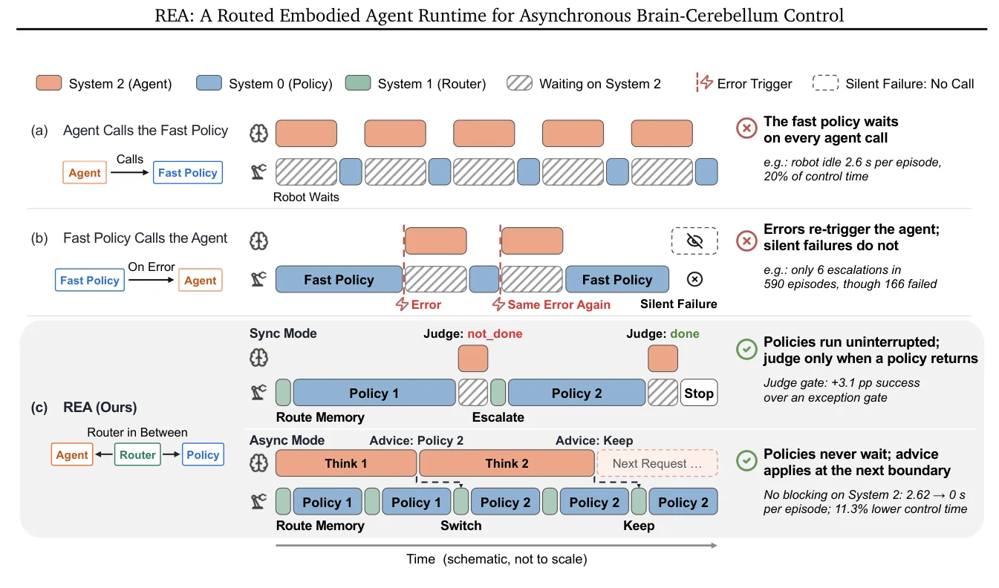
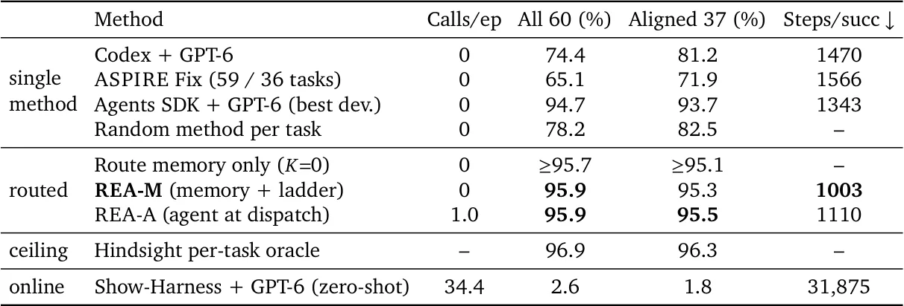
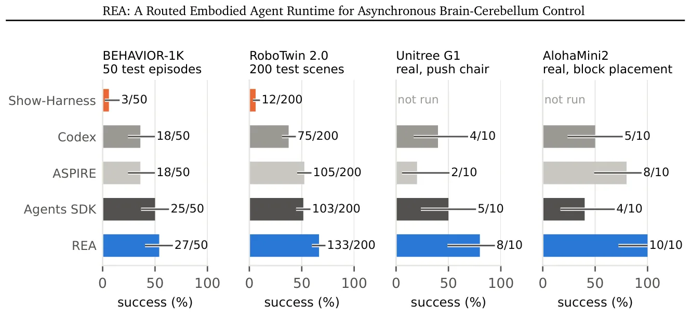
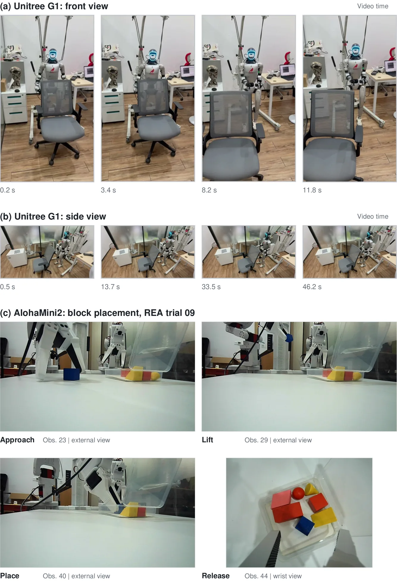

O Dilema do Controle Robótico: Precisão vs. Velocidade
A robótica moderna enfrenta um problema fundamental de arquitetura: a lacuna entre o raciocínio de alto nível e a execução motora de baixo nível. Modelos de fundação (Foundation Models) tornaram-se notavelmente confiáveis para planejamento e raciocínio abstrato, atuando como o que os autores chamam de "cérebro" (System 2). No entanto, eles são inerentemente lentos e custosos computacionalmente, tornando-os inadequados para atuar como controladores finos em tempo real.
Por outro lado, políticas reativas, como Visuo-Linguísticas-Acionistas (VLAs) e controladores de corpo inteiro, oferecem reflexos rápidos e eficientes, semelhantes ao "cerebelo" (System 1 ou System 0). Essas políticas são ótimas para execução, mas lutam para generalizar em cenários novos ou complexos. A ideia de combinar um cérebro deliberativo com um cerebelo reativo parece natural, mas a implementação prática esbarra em obstáculos de coordenação assíncrona.
O principal problema reside na incompatibilidade das pilhas de software e na dificuldade de sincronização. Em abordagens tradicionais, um agente que chama uma política rápida pode sofrer bloqueios (stalls) devido à latência do modelo lento. Inversamente, se a política rápida chama o agente em caso de erro, ela pode entrar em loops de falha persistente ou, pior, ignorar falhas silenciosas onde a política falha sem gerar um sinal de erro explícito.

Introduzindo o REA: Uma Runtime Unificada
Para resolver esses problemas, os pesquisadores propõem o REA (Routed Embodied Agent), um runtime unificado projetado para fazer três tipos de políticas cooperarem sob uma única regra de ouro: nenhuma política em execução deve esperar pelo cérebro. O REA não consulta o modelo de linguagem em cada falha, mas sim em momentos estratégicos definidos por um mecanismo de roteamento inteligente.
A arquitetura do REA é dividida em três níveis contratuais. O System 0 consiste em políticas reativas de baixa latência. O System 1 é o roteador encarnado (Embodied Router), responsável por decidir qual política executar com base em dados históricos. O System 2 é o agente deliberativo, que atua apenas quando necessário para recuperação ou planejamento complexo.
Essa separação permite que o sistema opere de forma assíncrona. Em vez de uma chamada síncrona bloqueante, o REA utiliza uma memória de rota (route memory) que armazena o sucesso medido de cada política para tarefas específicas. Isso permite que o roteador selecione a melhor política disponível sem precisar consultar o modelo lento no momento da execução, mantendo a fluidez do controle.
Mecanismo: Memória de Rota e Gate de Julgamento
O coração do REA é a combinação da memória de rota com um gate de julgamento acionado por fronteira (boundary-triggered judge gate). A memória de rota é construída durante uma fase de desenvolvimento, onde o sistema registra quais políticas têm maior probabilidade de sucesso para quais tipos de tarefas. Quando uma nova tarefa é apresentada, o roteador (System 1) consulta essa memória para selecionar a política inicial, evitando a latência de consulta ao cérebro.
Durante a execução, o gate de julgamento monitora a execução da política. Se a política falhar ou se o sistema detectar uma anomalia na fronteira de execução, o gate pode acionar o System 2 (cérebro) para intervir. Isso é crucial para lidar com falhas silenciosas, onde a política rápida continua executando, mas de forma subótima ou incorreta, sem gerar um erro explícito que interrompa o loop.
Além disso, o REA implementa uma escada de escalada de orçamento compartilhado (shared-budget escalation ladder) para recuperação limitada. Se a política inicial falhar, o sistema pode tentar outras políticas na sua pool antes de recorrer ao agente de alto nível. Isso evita que o sistema entre em loops infinitos de tentativas falhas, garantindo que o recurso computacional seja usado de forma eficiente e bounded.
Avaliação no LIBERO-Pro: Eficiência e Precisão
O REA foi avaliado em 3.000 episódios de teste em 60 tarefas do benchmark LIBERO-Pro. Os resultados mostram que o sistema atinge uma taxa de sucesso de 95,9%, superando a melhor política individual em seu próprio pool (94,7%). O ganho não vem apenas de uma pool maior de políticas, mas da capacidade de roteamento inteligente de selecionar a política certa para a tarefa certa.
Em termos de eficiência, o REA reduziu o número de passos de controle em 25% e o tempo de controle em 17% em comparação com os baselines. Isso demonstra que o roteamento baseado em memória de rota não apenas melhora a precisão, mas também a eficiência computacional, evitando chamadas desnecessárias ao modelo lento.
A análise ablation mostra que a memória de rota é o componente mais crítico. Sem ela, o desempenho cai significativamente, mesmo com o gate de julgamento. Isso confirma que a pré-computação do sucesso das políticas é essencial para a operação assíncrona eficiente.

Transferência e RoboTwin 2.0: Políticas Mistas
Um aspecto interessante do REA é sua capacidade de operar com políticas de diferentes origens. No estudo RoboTwin 2.0, o sistema foi testado com 100 episódios, alcançando 84% de sucesso com políticas VLA e 86% com políticas VLA+code. Isso supera o baseline mais forte de VLA individual (MEDex), que atingiu 80%.
Isso prova que o REA pode orquestrar políticas aprendidas e programáticas dentro do mesmo runtime. A memória de rota permite que o sistema aprenda quais tipos de políticas (geradas por código ou aprendidas por dados) funcionam melhor para quais sub-tarefas, permitindo uma flexibilidade que métodos monolíticos não oferecem.
A transferência para o benchmark BEHAVIOR-1K também foi bem-sucedida, onde o REA alcançou as maiores taxas de sucesso observadas entre os métodos comparados. Isso sugere que a abordagem assíncrona é robusta e generalizável para diferentes ambientes simulados.

Experimentos no Mundo Real: Unitree G1 e AlohaMini2
A validação final do REA ocorreu em robôs reais. No robô humanóide Unitree G1, o sistema foi capaz de realizar tarefas complexas, como empurrar uma cadeira, demonstrando a transferência do simulador para o mundo real. As imagens mostram o robô executando a tarefa com sucesso, sem quedas ou comportamentos erráticos.
No robô AlohaMini2, o REA foi testado em tarefas de colocação de blocos. Os resultados mostraram que o sistema conseguiu realizar a sequência de aproximação, levantamento, colocação e liberação de forma consistente, superando outros métodos em termos de sucesso e estabilidade.
Esses experimentos reais são cruciais porque demonstram que a arquitetura assíncrona não é apenas teórica. A latência do modelo de linguagem não compromete a estabilidade física do robô, e o roteamento inteligente ajuda a lidar com as incertezas do mundo real, como ruído nos sensores e variações na dinâmica do robô.

Limitações e Escopo
Apesar dos resultados promissores, o paper tem limitações. A memória de rota depende de dados de desenvolvimento para ser construída. Isso significa que o sistema requer uma fase de coleta de dados e calibração antes de ser implantado em novas tarefas. A generalização para tarefas completamente novas, sem dados de desenvolvimento, pode não ser tão eficaz.
Além disso, o sistema depende da qualidade dos modelos de linguagem e das políticas de controle. Se o modelo de linguagem (System 2) tiver erros de raciocínio ou as políticas (System 1/0) tiverem viéses sistemáticos, o roteamento pode não ser capaz de compensar completamente esses problemas.
O paper também não aborda extensivamente a escalabilidade para pools de políticas extremamente grandes. Embora o roteamento seja eficiente, o custo de manutenção da memória de rota pode crescer com o número de políticas e tarefas. Futuros trabalhos podem precisar explorar métodos mais eficientes para atualização e compressão dessa memória.
Conclusão: Uma Arquitetura Híbrida Madura
O REA representa um passo significativo na direção de arquiteturas robóticas híbridas maduras. Ao separar claramente as responsabilidades do raciocínio de alto nível e do controle de baixo nível, e ao garantir que a comunicação entre eles seja assíncrona e eficiente, o sistema supera as limitações das abordagens monolíticas.
Os resultados no LIBERO-Pro, RoboTwin 2.0 e em robôs reais demonstram que a combinação de roteamento baseado em memória e gates de julgamento pode melhorar significativamente a taxa de sucesso e a eficiência computacional.
Para desenvolvedores e pesquisadores em robótica, o REA oferece um blueprint prático para integrar modelos de fundação em sistemas de controle em tempo real, sem sacrificar a velocidade ou a estabilidade. A abordagem não é uma revolução teórica, mas uma engenharia robusta de um problema prático antigo.
O que fica
- REA elimina gargalos de latência ao garantir que políticas de controle nunca esperem pelo modelo de linguagem (System 2), operando de forma assíncrona.
- A memória de rota pré-computada permite selecionar a melhor política para cada tarefa, aumentando o sucesso em 1,2% sobre o melhor baseline individual no LIBERO-Pro.
- O sistema orquestra políticas aprendidas (VLAs) e programáticas (código) no mesmo runtime, alcançando 86% de sucesso no RoboTwin 2.0.
- A arquitetura foi validada em robôs reais (Unitree G1, AlohaMini2), demonstrando transferência eficaz do simulador para o mundo físico.
Paper original: REA: A Routed Embodied Agent Runtime for Asynchronous Brain-Cerebellum Control
Comentários
Nenhum comentário ainda. Seja o primeiro.